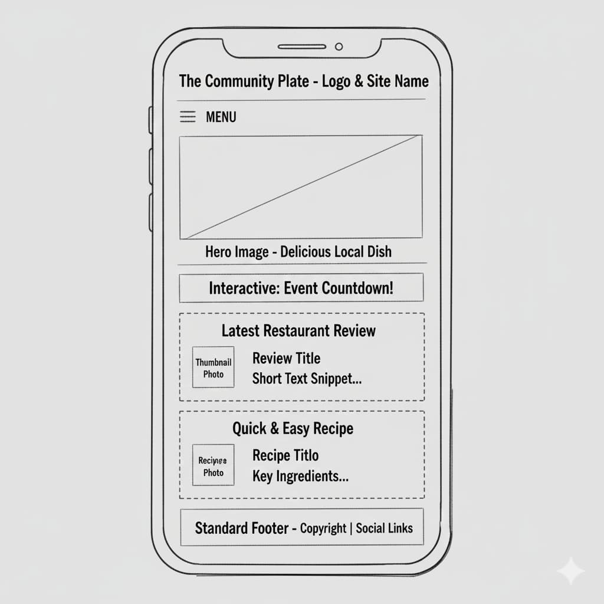
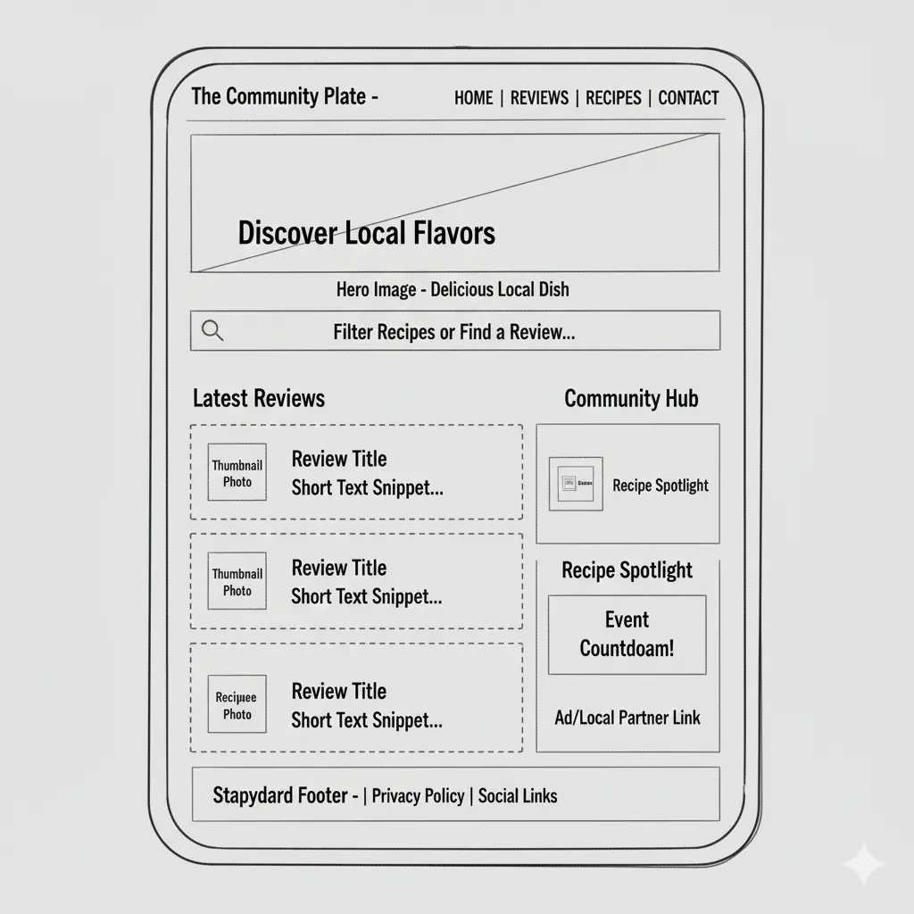

🏷️ Site Name
| Element | Detail |
|---|---|
| Site Name | The Community Plate |
| Logo Concept | A stylized fork and spoon crossed over a round plate graphic. |
| Justification | The name reflects local food, culture, and shared community experiences—ideal for a food blog focused on authentic local cuisine. |
| Optional Domain | thecommunityplate.com |
🧭 Site Purpose
The Community Plate celebrates local food culture by offering restaurant reviews, community-submitted recipes, and interactive features like photo galleries and event countdowns. The site connects food lovers, local businesses, and home cooks through accessible, authentic culinary content.
❓ Scenarios (Target Audience Questions)
The target audience includes local residents, tourists, and home cooks.
- “I want a great brunch spot near me with photos and a menu.” → Requires a filterable review section with images, location, and details.
- “I have extra tomatoes and want an easy recipe. I also want to submit my own recipe.” → Requires a recipe filter/search and a community upload page.
🎨 Color Scheme
High-contrast colors ensure AAA accessibility while maintaining a clean, fresh design.
| Color Name | Hex Code | Usage |
|---|---|---|
| White | #FFFFFF | Body background, section boxes |
| Charcoal Black | #363636 | Paragraph text, borders, table lines |
| Deep Forest Green | #134d13 | Headings, buttons, table headers |
| Pure White | #FFFFFF | Text on dark green backgrounds |
✍️ Typography
| Font | Type | Usage |
|---|---|---|
| Poppins | Sans-serif | Headers and branding |
| Roboto | Sans-serif | Body text: paragraphs, lists, recipes |
🖼️ Wireframe: Home Page Layout
Visual layout for both mobile and desktop views.
Mobile View (Stacked)
Single-column layout emphasizing vertical scrolling.
Desktop/Tablet View
Two-column layout optimizing space and navigation.
